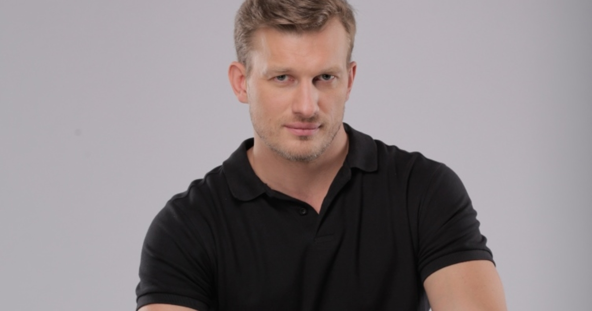

Российский Актер
Первым опытом в кино для Рыкова стали короткометражки «Вера», «Натка», «На закате нашего рассвета». Особо любил работать с артистом однокурсник-режиссер короткометражного кино Иван Шахназаров, сын известного режиссера и продюсера Карена Шахназарова. Иван привлек Петра для работы в фильмах «Рок», «Авторский метод», «Игроки», «Без слов».
Об актере заговорили после роли Максима в полнометражной ленте «Привычка расставаться» с участием Данилы Козловского и . Лента завоевала главный приз фестиваля «Святая Анна», отмечена специальным дипломом на фестивале «Кинотавр». Роль второго плана досталась Рыкову в фильме о Великой Отечественной войне «Истребители». Главные роли в картине сыграли Дмитрий Дюжев, Елена Яковлева, Олег Фомин.
Главного персонажа Андрея воплотил Рыков в приключенческом сериале «Корабль», повествующем о группе курсантов, дрейфующих на учебном судне в открытом море. Компанию молодому актеру составили Дмитрий Певцов, Роман Курцын, Агриппина Стеклова.
В 2015-м актер пополнил профессиональную копилку ролями в сериалах «Мамочки» и «Ложь во спасение». В российско-украинском сериале «Мамочки» о трех подругах в возрасте за тридцать Рыков сыграл небольшую роль бывшего мужа. Вторая картина повествует о следователе, расследующем серию убийств, в которых подозревается местный банкир.
Яркий образ Грека, вора, эгоиста, «плохого парня» получился у Петра в российско-латышском приключенческом триллере «Квест». Гибель его героя по ходу развития сюжета вызвала массу недовольных отзывов в Сети. Вместе с Рыковым над решением загадок бились Павел Прилучный и Агата Муцениеце.
В главной роли снялся Петр и в музыкальном клипе Максим, известной певицы. Видео выпущено на песню «Золотыми рыбками». Одновременно с этим проектом Петр вышел Петрна одну съемочную площадку с Дмитрием Хрусталевым, Константином Крюковым, Анной Ардовой в комедийном сериале «Помню — не помню!». В истории о женщине в чужом теле актер сыграл Никиту.
Во время съемок комедийного боевика «Максимальный удар» актерский состав побывал в Лос-Анджелесе и Вашингтоне. В фильме поучаствовали мировые звезды Марк Дакаскос, Том Арнольд, Эрик Робертс. Сюжет не отличался особой оригинальностью: команде спецагентов предстояло спасти похищенную внучку госсекретаря США. Внес свою лепту актер в очередную экранизацию романа Алексея Толстого «Хождение по мукам».
Поклонники увидели своего любимца в 16-серийном фильме «Кровавая барыня» о помещице Салтычихе. Петр Рыков сыграл Сергея Салтыкова, первого фаворита императрицы Екатерины Второй и родственника мужа Дарьи Салтыковой. Роль последней досталась Юлии Снигирь.
В 2018 году зрители могли наблюдать Петра в сериале «Березка» в роли солиста Алексея Покровского. В нем также снялась Любовь Константинова.
Затем фильмография актера пополнилась новыми проектами. В картине «Водоворот. Против течения» Петр Рыков исполнил главную роль Руслана Калинина, таинственного вдовца и владельца которое затягивает их в водоворот страстей и интриг. яхт-клуба. К нему на работу на должность пресс-секретаря устраивается Мила Егорова (Ольга Гришина). Между мужчиной и женщиной возникает необъяснимое притяжение,
Тогда же было выпущено продолжение рейтингового сериала «Женский доктор», где Петр предстал в своем привычном амплуа — акушер-гинеколог Александр Родионов.
В фильме «Успеть все исправить» Рыкову снова досталась главная роль. Актер перевоплотился в бизнесмена Егора Кормильцева, который в день своего 40-летия узнает, что смертельно болен. Поэтому он решает отправиться в прощальную поездку в свой родной город. В том же году поклонники увидели Петра Рыкова в мелодраме «Чужая сестра», где он исполнил второстепенную роль.
В начале 2021 года на Первом канале состоялась премьера сериала «Солнечный круг», в котором Петру посчастливилось сыграть центрального персонажа. В интервью актер поделился фактами со съемочного процесса и своим отношением в главному герою.
Для Рыкова было интересно сыграть оперативника, а точнее — продемонстрировать его романтическую линию. Некоторые сцены снимались в цирке Аскольда и Эдгарда Запашных. Актер признался, что никогда не испытывал положительных эмоций от нахождения в зоопарке, да и от дрессуры в принципе. В остальном же исполнить роль оперативника специальных служб ему понравилось, в том числе лазить по крышам, совершать различные трюки и даже играть на клавишных.
В том же году фильмография артиста пополнилась еще несколькими работами. В украинском проекте «Дело рук утопающих» режиссера Антона Азарова он также сыграл главного героя.
А по поводу сюжета и главной мысли картины сказал следующее:
В 2022 году зрители увидели Рыкова в главной роли детектива «Холодные берега. Возвращение». Этот проект стал продолжением сериала 2019-го, в котором ключевых персонажей исполнили Кирилл Сафонов и Екатерина Вилкова. Любопытно, что в первом сезоне многосерийный фильм был завершен, однако история настолько завлекла зрителя, что было решено снять продолжение.